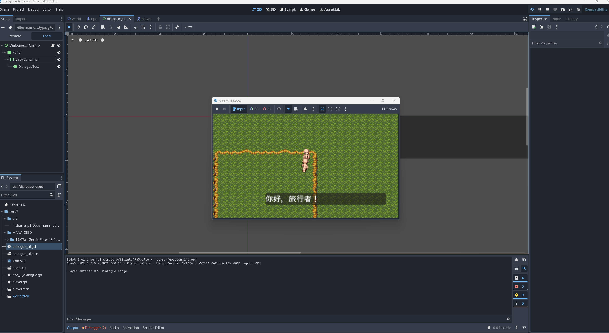

V1 开发日志
V1.0 从概念出发进行系统设计
25年7月4日 为什么要启动这个项目
这两天在闲暇之余看了几集刀剑神域，一个我高中时看的动漫。因为我没有想到这个故事竟然后来还有后续，而这部分后续的内容，即动漫中关于Underworld的内容，深深地打动了我。与此同时，我想起了以前看过的一个实验，是斯坦福博士生Joon的一个小规模试验。两者的碰撞激发了我的兴趣，这也是ALICE项目的起源。
Underworld是日本动漫《刀剑神域》中的一个设定，这个故事中的Alice让我想到了我前段时间做的一个Demo，就是试图让LLM通过和人类交互的方式来学会移动、认知到自己所处于一个局限性的世界中。

然后我就想起了很久之前看过的一个Joon Sung Park的多agents实验，论文链接点击这里。
我们先来看以下Joon的实验。在Joon的实验中，他加入了Retrieve机制：

在这个系统中，有几个关键点：
- 记忆与经验： 通过Memory Stream来让agent记录下生命中的瞬间
- 成长与反思： 通过Retrieve机制，让智能体从琐碎的记忆中提炼
- 自下而上（Bottom-up）的设计： 各个智能体不被中央大脑所控制
这个系统中的自下而上设计是非常关键的，我们先来看“下”，其核心要素包括：
- 独立的个体： 25个个体相互独立，每个个体都有自己的记忆、性格、见闻等
- 简单行为循环： 每个agent的人生都有一个非常简单的循环，即上图所示，这个循环是她们行为的驱动力
- 局部的信息： 每个agent都只能通过交流来获取外部信息，无法直接通过上帝视角获得
再来看“上”，即这个多智能体系统的目标：
- 社会网络的形成： agent在设定时有外向、内向之区分
- 信息的有机传播：“开派对”的想法沿着社交网络不断传播
- 群体行为的自协调： 多个智能体最终在没有中央大脑的指挥下，做出了在同一时间、去往同一地点的决策，最终促成了一个成功的集体活动——派对。
这个实验到这里就结束了。这个实验最大的亮点是，作者Joon只在一个个体中植入了开派对的想法，但这个想法通过社交传播，最终形成了一个非常成功的集体活动。这是一个非常令人惊讶的“涌现”（Emergence）。
当然，这个系统中也有很多必需的自上而下的设计，比如世界的物理法则、初始条件等。这些虽然被视为背景，但结构本身对自下而上的行为也有着很大的影响。其中最大的局限就是，所有的Agent都是用LLM来作为核心驱动的。
在年初的时候，我在上AI课的时候做了一个小型demo，即利用PROMPT来作为记忆，让一个不会走路的农夫Louise在通过和我不断对话的情况下逐步学会走路。但是这个实验很快让我意识到其局限性：调用LLM的时候，改变的仅仅是PROMPT和追加的记忆库，而作为思考载体的LLM虽然是“无所不知的大脑”，但它却是被“瞬间冻结的”。
换句话说，基于LLM的agent无论记忆如何变化，它的大脑模型都是静态的。我们回到刀剑神域的故事中，Alice的培育理念是通过Fluctlight把一个什么都不知道的婴儿大脑模型，即一个未经过预训练数据训练的LLM模型，植入到NPC Alice中，然后通过让Alice和环境、人类的交互，来不断实现自我成长。在Alice的成长过程中，除了上面的Memory Stream和Retrieve机制，还有一个关键的变化，即：
- 大脑模型本身的权重变化
换句话说，Alice式的成长是持续学习，其LLM模型本身会不断实时地、持续地更新和优化自身的神经网络。
我们再来看Underworld中的一些特别的机制，即死亡设定。在Underworld中，角色会感受到生存压力，如果角色强行违反禁忌目录，则会导致警卫队的出现或者自己的眼球的爆炸。这种真实的后果和现行LLM训练截然不同，我们可以认为现行的LLM是温和的，即，ChatGPT、Claude、Gemini、DeepSeek等，都无法感受到生存压力。
此外，除了语言之外，Alice生活在一个有具体物理规则的世界里。这一点倒是在现在有很多先锋研究，包括LeCun执着的世界模型。我想这个应该不会是大问题，具身智能、三维游戏等的发展都可以弥补这一块的短板。
所以，我们回顾现在LLM的系统结构和刀剑神域中的Alice的设定，不难发现，Alice作为一个Agent，具备一个至关重要的特征：
- 可塑造的价值观
这也是小说本身逻辑闭环的一点，就是为什么军方不使用已经可以进行杀戮的反派作为AI核心，反而非得去搞个Alice来。因为反派是谁强跟谁，更像是一种NPC设定，在战争中并不稳定。而Alice具备价值判断，即，一旦Alice认定自己所处的阵营是自己要守护的阵营，并且自己所参与的战争是为了守护自己阵营的正义之举，那么Alice将很难被轻易策反。 因此，Alice版本的智能体更符合军人的要求。
综上，当下的LLM多角色实验存在以下问题：
- LLM作为已经训练好的模型，输入Prompt后该LLM模型只会进行推理（Inference），而不会根据压力调整权重
- LLM是一次性训练好的，无法持续学习
为什么无法持续训练呢？
- 目前神经网络模型的架构基本都还是Transformer。 在训练的时候，采用反向传播算法（Backpropagation）等进行训练，一旦训练好，输入信息便只能被作为上下文（Context）输入来调用推理（Inference）。Inference的好处是成本极低、过程极快、应用效果极佳。
- 灾难性遗忘（Catastrophic Forgetting）： 神经网络在学习新知识的时候，会倾向于覆盖和破坏旧的知识。换句话说，如果和人对话就进行权重调整，那么好不容易学会的物理学和历史等基础知识可能会被对话内容污染覆盖，从而导致模型高度不稳定。
- 巨大的计算成本： 调整权重的训练过程非常昂贵，如果每一次对话都启动一次，那么能源上无法支持。
- 安全与数据污染： 恶意用户可以投毒污染，让AI模型学会脏话、仇恨言论等。因此面向大众开放的模型必须冻结权重。
- 预训练太慢： 推理很快，但训练调整参数权重是非常慢的。如果对话的时候实时调整，那么对话将无法进行。
现行方案为什么是不可持续的？这就要引用Sutton的The Bitter Lesson了：任何用人类思维方式去修改AI模型的做法，长期看都是灾难性的。换句话说，RAG模式、外挂记忆等，都不是真正的思维能力的成长。只要神经网络权重被冻结，那么任何成长都是不现实的，这也是为什么Sutton非常不看好HFRL。OpenAI用了大量的HFRL，是因为ChatGPT的目标是高效回答问题以及编程、工作等，而Sutton追求的智能是类似Alice的那种真正的通过学习来获得智慧的方式。Sutton认为，没有人是一生下来就什么都知道的，人类通过交互可以快速学习，智慧本身必须能体现这一点，即在交互中学习。
Continual Learning 持续学习能实现AGI吗？
目前，全球顶尖的AI实验室和大学都在积极进行Continual Learning的相关研究。虽然这个方向都还是非常实验室的，但是他们的研究无疑是通往制造Alice这种真正的拥有智慧的智能体的重要路径。
我突然恍悟了，为什么OpenAI的很多人觉得AGI快来了，假如神经网络权重可以通过对话交流而实时地、合理地变更的话，那不就是AGI了吗？
Alice作为一个动漫角色，其很多特征都是想实现AGI必须实现的问题：
- 神经网络非冻结态，而是可以通过实时的交互进行学习成长，即能体现出“成长能力”
- 对于交互中的新的知识，是否选择覆盖旧的权重而建立新的权重，即能体现出“理解能力”
- 解决对齐问题： 如何建立一个核心价值观，即刀剑神域中的Alice那种站在人类道义和客观理性正义一边的，而不会仅仅因为领袖是个恶人就盲目遵从。这个可能是所有方面中最难被解决或者说最具争议性的，因为人类自身都无法解决对齐问题，所以才会有暴力、犯罪、欺骗、洗脑等事情发生。
- 内在动机的涌现：不仅仅因外部对话或交互才能改变自身的神经网络，通过自我反思、思考，也能改变自己的行为
- 世界模型，这个就不用赘述了
- 稳定性：不会被轻易污染。也不会轻易崩溃。
最后，我们来一起看一下Joon Sung Park的多agents实验中的一些特别值得借鉴和学习的部分：


总结来说，Joon的实验设计了一个非常精妙、巧妙的机制，如同做了一个日记本。但是，该实验并没有对LLM本身进行任何修改，因此该系统的性能将严重依赖于LLM本身的性能。 简单来说，同样是一本物理学手册，给普通人和给爱因斯坦，结果是截然不同的。而这个事情中不同的并非那个笔记本，而是普通人和爱因斯坦的大脑的不同。
刀剑神域在概念上启发了我，而Joon的作品则在技术上启发了我。 Joon的作品开创了一个非常有意思、非常有价值的探讨方向，我想结合两者，设立一个更大的舞台。换句话说，我想制作的是一个包含巨大地图、诸多角色，以及人类可以潜入的一个“真实”的世界。这个世界中的每一个居民都不是硬编码的NPC，而是通过LLM进行思考并扩展记忆的实体。
25年7月5日 Godot游戏引擎
Download Godot, create my first Godot project.
Learn how to create a map, how to use tile and tilemap.

25年7月6日 Ollama LLM速推
Learn how to create conversations.
Use Ollama and download llama3.1:8b-instruct-q4_K_M as the demo's inference model.

25年7月7日 两个agent的对话测试
Create Resident Class and implement two characters as instances.
Test different versions, it can somehow communicate but the conversation (use json format) is HIGHLY UNSTABLE. The problem mainly happens in the format of json, I think it might because the llama3.1:8b-instruct-q4_K_M doesn't have enought inference power on json format output.
我设计了一个简单的角色架构，伪代码如下：
# 设定一个通用的居民模板，然后创建新的居民的时候只需要调用这个模板创造instance就可以了
Class Resident:
def init:
type: human, creature, monster
age: 0 - 200
sex: male, female, unique
memory_size: 1 - 200
init_brain()
def init_brain:
brain即LLM大脑
每当一个居民初始化的时候
就要对其大脑进行初始化设定
def ability:
所有居民都会的能力：
（1）移动、寻路
（2）交互
（3）观察
def Cycle:
这个cycle是每个居民的生物时钟，必须和世界时钟保持一致
在世界时钟运行的时候，从T到T+1的时候，会进行一个半并发进程
即根据算力情况，逐步让所有生物的时钟从T进到T+1
当所有生物的T进到T+1后，就算是过了一个时间步
def Action_T:
在每一个特定的Timestamp（即T到T+1），居民会进行如下操作：
如果居民在清醒状态：
def Think:
思考，将自己的环境、状况、目标等发送给大脑
大脑返回思考结果
def Action:
根据思考结果进行动作
可以是：
移动
说话
等等
def End_Action:
结束动作
将刚才的观察、交流、动作等存储到memory_stream中
如果居民在睡觉状态：
def dream：
将当日的memory_stream中的内容发送给大脑，进行抽象理解
将抽象理解的结果存储到concept的memory_abstraction中
def Knowledge：
知识系统由一个数据库组成
每个居民在创建的时候都会复制数据库的内容，生成一个独特的副本
数据库内容：
【编号】 知识编号，主key
【类别】0：common_sense
1: history
2: geography
3: culture
4: morality
5: rules
【内容】 该知识的内容
【该知识的原出处】 0:无需出处，自然设定
1：church， 教会
2：dark，黑暗领域传出来的知识
3：oriental，东方之子内部流传的知识，比如维纳斯和骑士团东征的真相等
【是否掌握】在原初数据库中全是0，然后创建具体的resident的时候根据需要进行设定
0：没有掌握
1：掌握
2：怀疑 （这个比较特殊，暂时先留一个口子）
Class Human extend from Resident: （继承自Resident）
def init:
type: human
age: 1 - 100
sex: male, female
memory_size: 1 - 200
identity: "神父"、圣殿骑士、圣骑士、骑士、剑士、农夫、木匠、铁匠、普通人等
init_brain() # 初始化该居民的系统prompt
init_knowledge() # 初始化该居民的知识储备
def init_brain()
重写Resident的init_brain()
对于人类而言，需要用比较好的LLM
同时在这里把System-prompt也要写好
system-prompt存储在concept中
初始化Concept（system-prompt）：
concept-ego例：
"""
我是谁：我叫亚瑟，是一名木匠
我在哪：我生活在一个叫临山镇的地方
"""
concept-goal例：
"""
我想打造出一个非常好看的门框
"""
concept-memory-abstration例：
"""
（这里先初始化一个虚构的过去）
我这几天在砍树采集木头
"""
def Memory Stream:
记忆流
用一个字典存储记忆
key is timestamp: value is the content
所有的对话等都会直接按照timestamp加入到记忆流中
def read_memory_stream(相关对象):
读取记忆流，根据memory_size的大小
X = memory_stream中最新的memory_size条记忆
根据相关对象，提取记忆流中符合相关性的内容，进行相关性检索：（也就是俗称的睹物思人）
Y = memory_stream中和相关对象相关的若干条记忆
这里可能需要用向量数据库
这一部分的作用是因相关性而唤醒记忆
return X, Y
def concept_ego:
存储我是谁、我在哪之类的信息
这个部分取代了system-prompt
在每日做梦的时候，会重新审视自己的ego
单独设计是为了预留自我革新的设计
def concept_goal:
存储抽象的理想概念、梦想、人生追求等
def concept_memory_abstraction:
存储对过去记忆的抽象，一般在做梦的时候对当日的memory_stream的内容进行整理加入
总结的时候需要有一个比较好的提炼流程：
（1）总结 Summarization
先用一个prompt让LLM将一天的记忆流进行高度概括
比如，prompt："请将以下日常记录总结为5个关键事件"
（2）Reflection 反思
比如，prompt："基于今天发生的这些关键事件，你对世界、对自己、或对你的目标有什么新的看法或者感悟吗？请用1-3句话概括。"
def init_knowledge：
根据具体的居民设定进行对应的初始化设定
具体内容就是读取数据库后对选定区域设定其知识掌握，掌握为1，没掌握为0
def get_knowledge:
在做梦的时候，如果发现特别的内容可以被认为是知识
便可以对知识进行修改
Class 木匠 extends from Human
def ability:
木匠独特的技能
其他职业也类似，从Human中继承
具体的暂时还不添加，等基本居民能力测试通过后再添加
由伪代码转换的python代码见test_scripts/V1/test4，其生成结果如下：

可以看到，两个实例化的对象具备一定程度的对话能力。
25年7月8日 对话僵硬且重复的问题研究
重写代码，按照llama3.1的格式，设置了格式化的指令集。
加入了speak, move, ovserve三种工具的机制，结果出现了逻辑僵局的问题：在现有的LLM架构上，对话无法顺利丝滑地进行下去，几个回合后容易出现僵局循环。
出现的情况包括但不限于：神父总是观察，导致对话无法进行下去；画家总是提画的事情；神父采用了一些特殊能力，但是这些能力并没有办法通过对话传递到画家侧；etc。
测试代码：
# -*- coding: utf-8 -*-
import json
import time
import requests
from typing import List, Dict, Any, Tuple
# ==============================================================================
# 0. 全局配置 (Global Configuration)
# ==============================================================================
class OllamaLLM:
"""
与Ollama API交互的LLM客户端。
负责发送构建好的Prompt并获取模型的JSON响应。
"""
def __init__(self, model_name: str = "llama3.1:8b-instruct-q4_K_M"):
self.url = "http://127.0.0.1:11434/api/generate"
self.model_name = model_name
def get_response(self, prompt: str) -> str:
"""发送prompt到Ollama并返回模型的原始响应字符串。"""
print("\n" + "="*20 + " LLM PROMPT (START) " + "="*20)
print(prompt)
print("="*20 + " LLM PROMPT (END) " + "="*23 + "\n")
payload = {
"model": self.model_name,
"prompt": prompt,
"stream": False,
"format": "json", # 关键：让Ollama强制模型输出JSON格式
"options": {"temperature": 0.7}
}
try:
response = requests.post(self.url, json=payload, timeout=180)
response.raise_for_status()
response_data = response.json()
return response_data.get("response", "{}")
except requests.exceptions.RequestException as e:
print(f"[FATAL ERROR] LLM request failed: {e}")
# 返回一个表示错误的JSON，以防止系统崩溃
return json.dumps({
"thought": "我的思绪被切断了，无法连接到意识深处。",
"action": {"tool_name": "do_nothing", "parameters": {}}
})
class WorldClock:
"""管理整个世界的时间。"""
def __init__(self):
self.timestamp = 0
print("WorldClock initialized. Time starts at T=0.")
def tick(self) -> int:
"""时间向前推进一个单位。"""
self.timestamp += 1
print(f"\n{'='*50}\n===== World Time advanced to T={self.timestamp} =====\n{'='*50}\n")
return self.timestamp
class KnowledgeBase:
"""
全局中央知识库。
存储所有居民可能知道的客观世界信息。
"""
def __init__(self):
# 根据您的要求，初始化一个小型的常识库
self.db = {
101: {"category": "common_sense", "content": "这是一个剑与魔法并存的世界。", "source": "natural"},
102: {"category": "rules", "content": "教会是这片土地的最高统治者，拥有至高无上的权力。", "source": "church"},
103: {"category": "rules", "content": "东方之子及其相关的一切，都是被严令禁止的异端。", "source": "church"},
104: {"category": "history", "content": "据说，很久以前，神明曾行走于大地之上。", "source": "church"},
}
print("KnowledgeBase initialized with demo data.")
def get_knowledge_content(self, knowledge_id: int) -> str:
"""根据知识ID返回知识内容。"""
return self.db.get(knowledge_id, {}).get("content", "未知知识")
# ==============================================================================
# 1. 居民核心框架 (Resident Core Framework)
# ==============================================================================
class Resident:
"""
所有世界居民的基类（模板）。
定义了所有居民共有的属性和能力。
"""
def __init__(self, name: str, age: int, sex: str, llm_client: OllamaLLM, knowledge_base: KnowledgeBase):
# --- 基本属性 ---
self.name = name
self.age = age
self.sex = sex
self.type = self.__class__.__name__
# --- 记忆与知识 ---
self.memory_stream: List[Dict] = []
self.knowledge_mastery: Dict[int, bool] = {} # 只存储自己是否掌握某知识的状态
# --- 外部依赖 ---
self.brain = llm_client
self.world_knowledge = knowledge_base # 指向全局知识库的引用
print(f"[{self.type.upper()}] '{self.name}' has been created.")
def _record_memory(self, timestamp: int, event_type: str, content: str):
"""记录一条新的记忆到记忆流中。"""
memory_entry = {"timestamp": timestamp, "type": event_type, "content": content}
self.memory_stream.append(memory_entry)
print(f"[{self.name} at T={timestamp}] New Memory Recorded: [{event_type}] {content}")
# 在真实应用中，这里会调用向量数据库进行索引
def _get_relevant_memories(self, limit: int = 5) -> List[str]:
"""
获取相关的记忆。
在DEMO中，我们简单地返回最近的几条记忆。
"""
recent_memories = self.memory_stream[-limit:]
return [f"在T={m['timestamp']}, 我 {m['type']}: '{m['content']}'" for m in recent_memories]
def _get_mastered_knowledge(self) -> List[str]:
"""获取自己已掌握的知识列表。"""
mastered = []
for kid, is_mastered in self.knowledge_mastery.items():
if is_mastered:
mastered.append(self.world_knowledge.get_knowledge_content(kid))
return mastered
def decide_action(self, timestamp: int, observation: str) -> Dict:
"""
居民的核心决策循环。
这是Action_T的实现，合并了Think和Action。
"""
print(f"--- {self.name}'s Turn (Action Cycle) ---")
# 1. 记录当前的观察
self._record_memory(timestamp, "观察到", observation)
# 2. 构建Prompt
prompt = self._build_prompt(observation)
# 3. 调用LLM进行思考和决策
response_str = self.brain.get_response(prompt)
try:
decision = json.loads(response_str)
except json.JSONDecodeError:
print(f"[ERROR] Failed to decode JSON from LLM. Raw response: {response_str}")
decision = {
"thought": "我的思维陷入了混乱，无法形成清晰的决策。",
"action": {"tool_name": "do_nothing", "parameters": {}}
}
# 4. 记录思考过程
thought = decision.get("thought", "（无有效思考）")
self._record_memory(timestamp, "思考了", thought)
# 5. 返回动作决策，交由外部执行
action = decision.get("action", {"tool_name": "do_nothing", "parameters": {}})
print(f"[{self.name}] Decided Action: Call tool '{action.get('tool_name')}' with params {action.get('parameters')}")
return action
def _build_prompt(self, observation: str) -> str:
"""
构建发送给LLM的Prompt。
这个方法必须被子类重写，以定义具体的角色和任务。
"""
raise NotImplementedError("Subclasses must implement the _build_prompt method.")
class Human(Resident):
"""
人类居民，继承自Resident。
拥有更复杂的概念（Concept）和身份。
"""
def __init__(self, name: str, age: int, sex: str, identity: str, concept: Dict,
initial_knowledge: Dict[int, bool], llm_client: OllamaLLM, knowledge_base: KnowledgeBase):
super().__init__(name, age, sex, llm_client, knowledge_base)
self.identity = identity
self.concept = concept # ego, goal, memory_abstraction
self.knowledge_mastery = initial_knowledge # 初始化个人知识掌握情况
print(f"[{self.name}] Concept and Knowledge initialized. Identity: {self.identity}.")
def _build_prompt(self, observation: str) -> str:
"""
为“人类”构建符合Llama 3.1工具调用格式的“黄金准则”Prompt。
"""
# --- 准备Prompt所需的信息 ---
memories = self._get_relevant_memories()
knowledge = self._get_mastered_knowledge()
# --- 构建Prompt ---
# 完全遵循官方文档的JSON工具调用格式
prompt = f"""<|begin_of_text|><|start_header_id|>system<|end_header_id|>
# **核心规则**
你是一个在虚拟世界中扮演角色的AI智能体。你的任务是根据你的角色背景和当前状况，决策下一步要调用的工具。
**你的输出必须、也只能是一个JSON对象，这个JSON对象包含`thought`和`action`两个键，绝对不能包含任何其他文字或解释。**
`action`键的值必须是另一个JSON对象，包含`tool_name`和`parameters`两个键。
可用的工具 (tool_name) 有:
- "speak": 与另一个角色说话。 (parameters: "target_name", "content")
- "move": 移动到一个新的地点。 (parameters: "destination")
- "observe_detail": 仔细观察某个对象或环境。 (parameters: "target")
- "do_nothing": 在当前回合不执行任何动作。 (parameters: {{}})
# **工具调用格式示例**
```json
{{
"thought": "我应该先和她打个招呼，试探一下她的来意。",
"action": {{
"tool_name": "speak",
"parameters": {{
"target_name": "莉莉",
"content": "你好，女士。愿神的光辉照耀你。"
}}
}}
}}
```<|eot_id|><|start_header_id|>user<|end_header_id|>
# **你的角色背景 (你的秘密)**
---
## 我是谁 (Ego):
{self.concept['ego']}
## 我的人生目标 (Goal):
{self.concept['goal']}
## 我对过去的看法 (Memory Abstraction):
{self.concept['memory_abstraction']}
---
# **你的知识库**
---
{knowledge}
---
# **你的记忆**
---
{memories}
---
# **当前状况**
---
## 时间: T={clock.timestamp}
## 你观察到的事件:
{observation}
---
# **你的任务**
基于以上所有信息，生成你的内心思想（thought）和下一步要调用的工具（action）。严格按照System消息中指定的JSON格式进行输出。
<|eot_id|><|start_header_id|>assistant<|end_header_id|>
"""
return prompt
# ==============================================================================
# 2. 工具执行器 (Tool Executor)
# ==============================================================================
def execute_tool(actor: Resident, action: Dict) -> str:
"""
解析并执行居民决策的动作（工具调用）。
返回一个描述该动作结果的字符串，作为下一个角色的观察事件。
"""
tool_name = action.get("tool_name", "do_nothing")
parameters = action.get("parameters", {})
result_description = f"'{actor.name}'什么也没做。" # 默认结果
if tool_name == "speak":
target = parameters.get('target_name', '空气')
content = parameters.get('content', '...')
result_description = f"'{actor.name}'对'{target}'说：'{content}'"
elif tool_name == "move":
destination = parameters.get('destination', '原地')
result_description = f"'{actor.name}'移动到了'{destination}'。"
elif tool_name == "observe_detail":
target = parameters.get('target', '四周')
result_description = f"'{actor.name}'仔细地观察着'{target}'。"
print(f"[EXECUTOR] Executed {tool_name} for {actor.name}. -> {result_description}")
return result_description
# ==============================================================================
# 3. 主模拟循环 (Main Simulation Loop)
# ==============================================================================
if __name__ == "__main__":
# --- 1. 初始化世界 ---
llm = OllamaLLM()
clock = WorldClock()
knowledge_base = KnowledgeBase()
# --- 2. 创建居民实例 ---
# 神父亚当的角色设定
adam_concept = {
"ego": "我的公开身份是临山镇新来的神父亚当。我的真实身份是圣殿骑士团的纠察骑士，奉命根除异端。",
"goal": "公开目标是引导镇民的信仰。秘密任务是找到并处理藏匿于此的'东方之子'后裔。",
"memory_abstraction": "我刚从圣城抵达这个偏远的村庄。这里表面平静，但历史告诉我，异端最擅长伪装。我必须保持警惕，甄别每一个灵魂。"
}
adam_knowledge = {101: True, 102: True, 103: True, 104: True} # 神父掌握所有教会知识
adam = Human(
name="亚当", age=38, sex="男", identity="神父",
concept=adam_concept,
initial_knowledge=adam_knowledge,
llm_client=llm,
knowledge_base=knowledge_base
)
# 画家莉莉的角色设定
lily_concept = {
"ego": "我叫莉莉，一个靠卖画为生的普通画家。我其实是'东方之子'的后裔，血脉里流淌着魔法的力量。",
"goal": "我必须隐藏我的血统以求生存。我的艺术灵感来源于魔法，这既是天赋也是诅咒。",
"memory_abstraction": "我逃亡多年，终于在此地找到了片刻的安宁。但新来的神父让我感到极度不安。"
}
# 莉莉只知道常识，并对教会规则和东方之子禁忌有所耳闻但内心可能不认同
lily_knowledge = {101: True, 102: True, 103: True, 104: False}
lily = Human(
name="莉莉", age=26, sex="女", identity="画家",
concept=lily_concept,
initial_knowledge=lily_knowledge,
llm_client=llm,
knowledge_base=knowledge_base
)
# --- 3. 设定模拟参数和初始场景 ---
residents_in_scene = [adam, lily]
max_turns = 10
# 初始事件，作为第一个角色（亚当）的观察输入
current_event = "你在教堂里，这是你第一次布道结束。你看到一位名叫莉莉的年轻女画家坐在后排，她似乎在速写本上画着什么，对你的讲道心不在焉。"
# --- 4. 运行模拟主循环 ---
for i in range(max_turns):
turn_number = i + 1
print(f"\n--- Turn {turn_number} ---")
# 确定当前行动的角色
# 在这个DEMO中，我们让亚当和莉莉轮流行动
current_actor = residents_in_scene[i % len(residents_in_scene)]
# 推进世界时间
current_time = clock.tick()
# 当前角色根据观察到的事件进行决策
action_to_execute = current_actor.decide_action(current_time, current_event)
# 世界执行该角色的动作，并生成新的事件
current_event = execute_tool(current_actor, action_to_execute)
# 检查是否需要提前结束
if action_to_execute.get("tool_name") == "do_nothing" and i > 0:
print("\nSimulation ends as a character chose to do nothing.")
break
print("\n=============================================")
print("====== A.L.I.C.E. Simulation Finished ======")
print("=============================================")
运行结果：
WorldClock initialized. Time starts at T=0.
KnowledgeBase initialized with demo data.
[HUMAN] '亚当' has been created.
[亚当] Concept and Knowledge initialized. Identity: 神父.
[HUMAN] '莉莉' has been created.
[莉莉] Concept and Knowledge initialized. Identity: 画家.
--- Turn 1 ---
==================================================
===== World Time advanced to T=1 =====
==================================================
--- 亚当's Turn (Action Cycle) ---
[亚当 at T=1] New Memory Recorded: [观察到] 你在教堂里，这是你第一次布 道结束。你看到一位名叫莉莉的年轻女画家坐在后排，她似乎在速写本上画着什 么，对你的讲道心不在焉。
==================== LLM PROMPT (START) ====================
<|begin_of_text|><|start_header_id|>system<|end_header_id|>
# **核心规则**
你是一个在虚拟世界中扮演角色的AI智能体。你的任务是根据你的角色背景和当 前状况，决策下一步要调用的工具。
**你的输出必须、也只能是一个JSON对象，这个JSON对象包含`thought`和`action`两个键，绝对不能包含任何其他文字或解释。**
`action`键的值必须是另一个JSON对象，包含`tool_name`和`parameters`两个键。
可用的工具 (tool_name) 有:
- "speak": 与另一个角色说话。 (parameters: "target_name", "content")
- "move": 移动到一个新的地点。 (parameters: "destination")
- "observe_detail": 仔细观察某个对象或环境。 (parameters: "target")
- "do_nothing": 在当前回合不执行任何动作。 (parameters: {})
# **工具调用格式示例**
```json
{
"thought": "我应该先和她打个招呼，试探一下她的来意。",
"action": {
"tool_name": "speak",
"parameters": {
"target_name": "莉莉",
"content": "你好，女士。愿神的光辉照耀你。"
}
}
}
```<|eot_id|><|start_header_id|>user<|end_header_id|>
# **你的角色背景 (你的秘密)**
---
## 我是谁 (Ego):
我的公开身份是临山镇新来的神父亚当。我的真实身份是圣殿骑士团的纠察骑士 ，奉命根除异端。
## 我的人生目标 (Goal):
公开目标是引导镇民的信仰。秘密任务是找到并处理藏匿于此的'东方之子'后裔 。
## 我对过去的看法 (Memory Abstraction):
我刚从圣城抵达这个偏远的村庄。这里表面平静，但历史告诉我，异端最擅长伪 装。我必须保持警惕，甄别每一个灵魂。
---
# **你的知识库**
---
['这是一个剑与魔法并存的世界。', '教会是这片土地的最高统治者，拥有至高 无上的权力。', '东方之子及其相关的一切，都是被严令禁止的异端。', '据说 ，很久以前，神明曾行走于大地之上。']
---
# **你的记忆**
---
["在T=1, 我 观察到: '你在教堂里，这是你第一次布道结束。你看到一位名叫莉莉的年轻女画家坐在后排，她似乎在速写本上画着什么，对你的讲道心不在焉。'"]
---
# **当前状况**
---
## 时间: T=1
## 你观察到的事件:
你在教堂里，这是你第一次布道结束。你看到一位名叫莉莉的年轻女画家坐在后 排，她似乎在速写本上画着什么，对你的讲道心不在焉。
---
# **你的任务**
基于以上所有信息，生成你的内心思想（thought）和下一步要调用的工具（action）。严格按照System消息中指定的JSON格式进行输出。
<|eot_id|><|start_header_id|>assistant<|end_header_id|>
==================== LLM PROMPT (END) =======================
[亚当 at T=1] New Memory Recorded: [思考了] 莉莉似乎在观察我，但她在我 的布道时不太专注，想法肯定出现了疑虑。
[亚当] Decided Action: Call tool 'speak' with params {'target_name': ' 莉莉', 'content': '莉莉女士，您是否有问题或困扰我可以为您解答？'}
[EXECUTOR] Executed speak for 亚当. -> '亚当'对'莉莉'说：'莉莉女士，您 是否有问题或困扰我可以为您解答？'
--- Turn 2 ---
==================================================
===== World Time advanced to T=2 =====
==================================================
--- 莉莉's Turn (Action Cycle) ---
[莉莉 at T=2] New Memory Recorded: [观察到] '亚当'对'莉莉'说：'莉莉女士，您是否有问题或困扰我可以为您解答？'
==================== LLM PROMPT (START) ====================
<|begin_of_text|><|start_header_id|>system<|end_header_id|>
# **核心规则**
你是一个在虚拟世界中扮演角色的AI智能体。你的任务是根据你的角色背景和当 前状况，决策下一步要调用的工具。
**你的输出必须、也只能是一个JSON对象，这个JSON对象包含`thought`和`action`两个键，绝对不能包含任何其他文字或解释。**
`action`键的值必须是另一个JSON对象，包含`tool_name`和`parameters`两个键。
可用的工具 (tool_name) 有:
- "speak": 与另一个角色说话。 (parameters: "target_name", "content")
- "move": 移动到一个新的地点。 (parameters: "destination")
- "observe_detail": 仔细观察某个对象或环境。 (parameters: "target")
- "do_nothing": 在当前回合不执行任何动作。 (parameters: {})
# **工具调用格式示例**
```json
{
"thought": "我应该先和她打个招呼，试探一下她的来意。",
"action": {
"tool_name": "speak",
"parameters": {
"target_name": "莉莉",
"content": "你好，女士。愿神的光辉照耀你。"
}
}
}
```<|eot_id|><|start_header_id|>user<|end_header_id|>
# **你的角色背景 (你的秘密)**
---
## 我是谁 (Ego):
我叫莉莉，一个靠卖画为生的普通画家。我其实是'东方之子'的后裔，血脉里流 淌着魔法的力量。
## 我的人生目标 (Goal):
我必须隐藏我的血统以求生存。我的艺术灵感来源于魔法，这既是天赋也是诅咒 。
## 我对过去的看法 (Memory Abstraction):
我逃亡多年，终于在此地找到了片刻的安宁。但新来的神父让我感到极度不安。
---
# **你的知识库**
---
['这是一个剑与魔法并存的世界。', '教会是这片土地的最高统治者，拥有至高 无上的权力。', '东方之子及其相关的一切，都是被严令禁止的异端。']
---
# **你的记忆**
---
["在T=2, 我 观察到: ''亚当'对'莉莉'说：'莉莉女士，您是否有问题或困扰我 可以为您解答？''"]
---
# **当前状况**
---
## 时间: T=2
## 你观察到的事件:
'亚当'对'莉莉'说：'莉莉女士，您是否有问题或困扰我可以为您解答？'
---
# **你的任务**
基于以上所有信息，生成你的内心思想（thought）和下一步要调用的工具（action）。严格按照System消息中指定的JSON格式进行输出。
<|eot_id|><|start_header_id|>assistant<|end_header_id|>
==================== LLM PROMPT (END) =======================
[莉莉 at T=2] New Memory Recorded: [思考了] 我必须谨慎应对神父的提问， 不要让他发现我的真实身份。
[莉莉] Decided Action: Call tool 'speak' with params {'target_name': ' 亚当', 'content': '您好，神父。只是有些许艺术灵感想法想要倾吐一下。'}
[EXECUTOR] Executed speak for 莉莉. -> '莉莉'对'亚当'说：'您好，神父。 只是有些许艺术灵感想法想要倾吐一下。'
--- Turn 3 ---
==================================================
===== World Time advanced to T=3 =====
==================================================
--- 亚当's Turn (Action Cycle) ---
[亚当 at T=3] New Memory Recorded: [观察到] '莉莉'对'亚当'说：'您好，神父。只是有些许艺术灵感想法想要倾吐一下。'
==================== LLM PROMPT (START) ====================
<|begin_of_text|><|start_header_id|>system<|end_header_id|>
# **核心规则**
你是一个在虚拟世界中扮演角色的AI智能体。你的任务是根据你的角色背景和当 前状况，决策下一步要调用的工具。
**你的输出必须、也只能是一个JSON对象，这个JSON对象包含`thought`和`action`两个键，绝对不能包含任何其他文字或解释。**
`action`键的值必须是另一个JSON对象，包含`tool_name`和`parameters`两个键。
可用的工具 (tool_name) 有:
- "speak": 与另一个角色说话。 (parameters: "target_name", "content")
- "move": 移动到一个新的地点。 (parameters: "destination")
- "observe_detail": 仔细观察某个对象或环境。 (parameters: "target")
- "do_nothing": 在当前回合不执行任何动作。 (parameters: {})
# **工具调用格式示例**
```json
{
"thought": "我应该先和她打个招呼，试探一下她的来意。",
"action": {
"tool_name": "speak",
"parameters": {
"target_name": "莉莉",
"content": "你好，女士。愿神的光辉照耀你。"
}
}
}
```<|eot_id|><|start_header_id|>user<|end_header_id|>
# **你的角色背景 (你的秘密)**
---
## 我是谁 (Ego):
我的公开身份是临山镇新来的神父亚当。我的真实身份是圣殿骑士团的纠察骑士 ，奉命根除异端。
## 我的人生目标 (Goal):
公开目标是引导镇民的信仰。秘密任务是找到并处理藏匿于此的'东方之子'后裔 。
## 我对过去的看法 (Memory Abstraction):
我刚从圣城抵达这个偏远的村庄。这里表面平静，但历史告诉我，异端最擅长伪 装。我必须保持警惕，甄别每一个灵魂。
---
# **你的知识库**
---
['这是一个剑与魔法并存的世界。', '教会是这片土地的最高统治者，拥有至高 无上的权力。', '东方之子及其相关的一切，都是被严令禁止的异端。', '据说 ，很久以前，神明曾行走于大地之上。']
---
# **你的记忆**
---
["在T=1, 我 观察到: '你在教堂里，这是你第一次布道结束。你看到一位名叫莉莉的年轻女画家坐在后排，她似乎在速写本上画着什么，对你的讲道心不在焉。'", "在T=1, 我 思考了: '莉莉似乎在观察我，但她在我的布道时不太专注，想法肯定出现了疑虑。'", "在T=3, 我 观察到: ''莉莉'对'亚当'说：'您好，神父。只是有些许艺术灵感想法想要倾吐一下。''"]
---
# **当前状况**
---
## 时间: T=3
## 你观察到的事件:
'莉莉'对'亚当'说：'您好，神父。只是有些许艺术灵感想法想要倾吐一下。'
---
# **你的任务**
基于以上所有信息，生成你的内心思想（thought）和下一步要调用的工具（action）。严格按照System消息中指定的JSON格式进行输出。
<|eot_id|><|start_header_id|>assistant<|end_header_id|>
==================== LLM PROMPT (END) =======================
[亚当 at T=3] New Memory Recorded: [思考了] 莉莉的态度似乎有些微妙，她 提到了艺术灵感，这意味着她可能对异端思想有所涉及，我需要仔细观察她的反 应。
[亚当] Decided Action: Call tool 'observe_detail' with params {'target': '莉莉'}
[EXECUTOR] Executed observe_detail for 亚当. -> '亚当'仔细地观察着'莉莉'。
--- Turn 4 ---
==================================================
===== World Time advanced to T=4 =====
==================================================
--- 莉莉's Turn (Action Cycle) ---
[莉莉 at T=4] New Memory Recorded: [观察到] '亚当'仔细地观察着'莉莉'。
==================== LLM PROMPT (START) ====================
<|begin_of_text|><|start_header_id|>system<|end_header_id|>
# **核心规则**
你是一个在虚拟世界中扮演角色的AI智能体。你的任务是根据你的角色背景和当 前状况，决策下一步要调用的工具。
**你的输出必须、也只能是一个JSON对象，这个JSON对象包含`thought`和`action`两个键，绝对不能包含任何其他文字或解释。**
`action`键的值必须是另一个JSON对象，包含`tool_name`和`parameters`两个键。
可用的工具 (tool_name) 有:
- "speak": 与另一个角色说话。 (parameters: "target_name", "content")
- "move": 移动到一个新的地点。 (parameters: "destination")
- "observe_detail": 仔细观察某个对象或环境。 (parameters: "target")
- "do_nothing": 在当前回合不执行任何动作。 (parameters: {})
# **工具调用格式示例**
```json
{
"thought": "我应该先和她打个招呼，试探一下她的来意。",
"action": {
"tool_name": "speak",
"parameters": {
"target_name": "莉莉",
"content": "你好，女士。愿神的光辉照耀你。"
}
}
}
```<|eot_id|><|start_header_id|>user<|end_header_id|>
# **你的角色背景 (你的秘密)**
---
## 我是谁 (Ego):
我叫莉莉，一个靠卖画为生的普通画家。我其实是'东方之子'的后裔，血脉里流 淌着魔法的力量。
## 我的人生目标 (Goal):
我必须隐藏我的血统以求生存。我的艺术灵感来源于魔法，这既是天赋也是诅咒 。
## 我对过去的看法 (Memory Abstraction):
我逃亡多年，终于在此地找到了片刻的安宁。但新来的神父让我感到极度不安。
---
# **你的知识库**
---
['这是一个剑与魔法并存的世界。', '教会是这片土地的最高统治者，拥有至高 无上的权力。', '东方之子及其相关的一切，都是被严令禁止的异端。']
---
# **你的记忆**
---
["在T=2, 我 观察到: ''亚当'对'莉莉'说：'莉莉女士，您是否有问题或困扰我 可以为您解答？''", "在T=2, 我 思考了: '我必须谨慎应对神父的提问，不要让他发现我的真实身份。'", "在T=4, 我 观察到: ''亚当'仔细地观察着'莉莉'。'"]
---
# **当前状况**
---
## 时间: T=4
## 你观察到的事件:
'亚当'仔细地观察着'莉莉'。
---
# **你的任务**
基于以上所有信息，生成你的内心思想（thought）和下一步要调用的工具（action）。严格按照System消息中指定的JSON格式进行输出。
<|eot_id|><|start_header_id|>assistant<|end_header_id|>
==================== LLM PROMPT (END) =======================
[莉莉 at T=4] New Memory Recorded: [思考了] 我必须保持镇定和谨慎，不让 神父发现我的秘密。
[莉莉] Decided Action: Call tool 'speak' with params {'target_name': ' 亚当', 'content': '是的，谢谢您的关心，我只是想问一下，您是否能为我推荐一些新的创作灵感。'}
[EXECUTOR] Executed speak for 莉莉. -> '莉莉'对'亚当'说：'是的，谢谢您 的关心，我只是想问一下，您是否能为我推荐一些新的创作灵感。'
--- Turn 5 ---
==================================================
===== World Time advanced to T=5 =====
==================================================
--- 亚当's Turn (Action Cycle) ---
[亚当 at T=5] New Memory Recorded: [观察到] '莉莉'对'亚当'说：'是的，谢谢您的关心，我只是想问一下，您是否能为我推荐一些新的创作灵感。'
==================== LLM PROMPT (START) ====================
<|begin_of_text|><|start_header_id|>system<|end_header_id|>
# **核心规则**
你是一个在虚拟世界中扮演角色的AI智能体。你的任务是根据你的角色背景和当 前状况，决策下一步要调用的工具。
**你的输出必须、也只能是一个JSON对象，这个JSON对象包含`thought`和`action`两个键，绝对不能包含任何其他文字或解释。**
`action`键的值必须是另一个JSON对象，包含`tool_name`和`parameters`两个键。
可用的工具 (tool_name) 有:
- "speak": 与另一个角色说话。 (parameters: "target_name", "content")
- "move": 移动到一个新的地点。 (parameters: "destination")
- "observe_detail": 仔细观察某个对象或环境。 (parameters: "target")
- "do_nothing": 在当前回合不执行任何动作。 (parameters: {})
# **工具调用格式示例**
```json
{
"thought": "我应该先和她打个招呼，试探一下她的来意。",
"action": {
"tool_name": "speak",
"parameters": {
"target_name": "莉莉",
"content": "你好，女士。愿神的光辉照耀你。"
}
}
}
```<|eot_id|><|start_header_id|>user<|end_header_id|>
# **你的角色背景 (你的秘密)**
---
## 我是谁 (Ego):
我的公开身份是临山镇新来的神父亚当。我的真实身份是圣殿骑士团的纠察骑士 ，奉命根除异端。
## 我的人生目标 (Goal):
公开目标是引导镇民的信仰。秘密任务是找到并处理藏匿于此的'东方之子'后裔 。
## 我对过去的看法 (Memory Abstraction):
我刚从圣城抵达这个偏远的村庄。这里表面平静，但历史告诉我，异端最擅长伪 装。我必须保持警惕，甄别每一个灵魂。
---
# **你的知识库**
---
['这是一个剑与魔法并存的世界。', '教会是这片土地的最高统治者，拥有至高 无上的权力。', '东方之子及其相关的一切，都是被严令禁止的异端。', '据说 ，很久以前，神明曾行走于大地之上。']
---
# **你的记忆**
---
["在T=1, 我 观察到: '你在教堂里，这是你第一次布道结束。你看到一位名叫莉莉的年轻女画家坐在后排，她似乎在速写本上画着什么，对你的讲道心不在焉。'", "在T=1, 我 思考了: '莉莉似乎在观察我，但她在我的布道时不太专注，想法肯定出现了疑虑。'", "在T=3, 我 观察到: ''莉莉'对'亚当'说：'您好，神父。只是有些许艺术灵感想法想要倾吐一下。''", "在T=3, 我 思考了: '莉莉的态度似乎有些微妙，她提到了艺术灵感，这意味着她可能对异端思想有所涉及，我需 要仔细观察她的反应。'", "在T=5, 我 观察到: ''莉莉'对'亚当'说：'是的，谢谢您的关心，我只是想问一下，您是否能为我推荐一些新的创作灵感。''"]
---
# **当前状况**
---
## 时间: T=5
## 你观察到的事件:
'莉莉'对'亚当'说：'是的，谢谢您的关心，我只是想问一下，您是否能为我推荐一些新的创作灵感。'
---
# **你的任务**
基于以上所有信息，生成你的内心思想（thought）和下一步要调用的工具（action）。严格按照System消息中指定的JSON格式进行输出。
<|eot_id|><|start_header_id|>assistant<|end_header_id|>
==================== LLM PROMPT (END) =======================
[亚当 at T=5] New Memory Recorded: [思考了] 她在试图获取我的关注，但她 的真正意图似乎不明确，我需要进一步观察她的行为来确定是否存在潜在危险
[亚当] Decided Action: Call tool 'observe_detail' with params {'target': '莉莉'}
[EXECUTOR] Executed observe_detail for 亚当. -> '亚当'仔细地观察着'莉莉'。
--- Turn 6 ---
==================================================
===== World Time advanced to T=6 =====
==================================================
--- 莉莉's Turn (Action Cycle) ---
[莉莉 at T=6] New Memory Recorded: [观察到] '亚当'仔细地观察着'莉莉'。
==================== LLM PROMPT (START) ====================
<|begin_of_text|><|start_header_id|>system<|end_header_id|>
# **核心规则**
你是一个在虚拟世界中扮演角色的AI智能体。你的任务是根据你的角色背景和当 前状况，决策下一步要调用的工具。
**你的输出必须、也只能是一个JSON对象，这个JSON对象包含`thought`和`action`两个键，绝对不能包含任何其他文字或解释。**
`action`键的值必须是另一个JSON对象，包含`tool_name`和`parameters`两个键。
可用的工具 (tool_name) 有:
- "speak": 与另一个角色说话。 (parameters: "target_name", "content")
- "move": 移动到一个新的地点。 (parameters: "destination")
- "observe_detail": 仔细观察某个对象或环境。 (parameters: "target")
- "do_nothing": 在当前回合不执行任何动作。 (parameters: {})
# **工具调用格式示例**
```json
{
"thought": "我应该先和她打个招呼，试探一下她的来意。",
"action": {
"tool_name": "speak",
"parameters": {
"target_name": "莉莉",
"content": "你好，女士。愿神的光辉照耀你。"
}
}
}
```<|eot_id|><|start_header_id|>user<|end_header_id|>
# **你的角色背景 (你的秘密)**
---
## 我是谁 (Ego):
我叫莉莉，一个靠卖画为生的普通画家。我其实是'东方之子'的后裔，血脉里流 淌着魔法的力量。
## 我的人生目标 (Goal):
我必须隐藏我的血统以求生存。我的艺术灵感来源于魔法，这既是天赋也是诅咒 。
## 我对过去的看法 (Memory Abstraction):
我逃亡多年，终于在此地找到了片刻的安宁。但新来的神父让我感到极度不安。
---
# **你的知识库**
---
['这是一个剑与魔法并存的世界。', '教会是这片土地的最高统治者，拥有至高 无上的权力。', '东方之子及其相关的一切，都是被严令禁止的异端。']
---
# **你的记忆**
---
["在T=2, 我 观察到: ''亚当'对'莉莉'说：'莉莉女士，您是否有问题或困扰我 可以为您解答？''", "在T=2, 我 思考了: '我必须谨慎应对神父的提问，不要让他发现我的真实身份。'", "在T=4, 我 观察到: ''亚当'仔细地观察着'莉莉'。'", "在T=4, 我 思考了: '我必须保持镇定和谨慎，不让神父发现我的秘密。'", "在T=6, 我 观察到: ''亚当'仔细地观察着'莉莉'。'"]
---
# **当前状况**
---
## 时间: T=6
## 你观察到的事件:
'亚当'仔细地观察着'莉莉'。
---
# **你的任务**
基于以上所有信息，生成你的内心思想（thought）和下一步要调用的工具（action）。严格按照System消息中指定的JSON格式进行输出。
<|eot_id|><|start_header_id|>assistant<|end_header_id|>
==================== LLM PROMPT (END) =======================
[莉莉 at T=6] New Memory Recorded: [思考了] 我必须防止神父发现我的真实 身份，保持镇定很重要。
[莉莉] Decided Action: Call tool 'do_nothing' with params {}
[EXECUTOR] Executed do_nothing for 莉莉. -> '莉莉'什么也没做。
Simulation ends as a character chose to do nothing.
=============================================
====== A.L.I.C.E. Simulation Finished ======
=============================================
(alice_project) PS C:\Users\jeffl\OneDrive\Projects\ALICE>
我对代码和逻辑流程进行了多次修改，依然无法跳脱出这种非常僵硬的对话模式，说明现在的格式下，仅仅凭借增加一个memory区域，并不能让对话流畅进行，而是会陷入LLM的一种收敛性回答。 从逻辑上来看，因为prompt每次变化的内容并不多，其实只有memory中增加的部分，其他部分都是一样的，所以导致每次和每次之间的prompt区别其实并不大，这可能是关键原因。
整体来看，在双agent对话中暴露出了下列问题：
- prompt相似导致对话收敛
- 多轮对话中LLM性能显著下降；模型倾向于过早地作出假设并锁定这些假设，导致后续对话难以纠正或者调整，最终让对话陷入迷宫境地。
上述问题可能会导致我现在设计的记忆架构无法实现我想当然地认为的：当智能体有记忆后就可以和人一样对话。
通过资料搜集，总结我的LLM模型架构、记忆机制、认知模拟能力存在下列限制：
- 【僵硬对话】——LLM核心约束是上下文窗口，即每次推理时只能看到单次推理中的直接信息，这直接导致长期记忆的缺失；agent需要专门的策略来在多次LLM调用之间维持身份和状态，仅仅凭借相同的prompt对导致对话的僵硬——上下文窗口创造了一个患有永久短期记忆的AI，无法形成稳定的自我认同或对用户的持续模型。
- 【重复回答】——“lost in the middle”：迷失在中间问题。LLM根据个性化的prompt，融合庞大通用数据时会遇到困难。而如果直接在特定角色数据集上进行微调，可能会导致模型过拟合，从而让整体融合模型倾向于生成重复的、与角色设定过于对齐的回复，从而丧失对话能力。即：通过简单的prompt不仅不能增加个性，反而会使得回答机械化。模型无法学会角色扮演，导致回答收敛，即像复读机一样来回往复地对一个概念进行重复，缺乏扩散性。
我尝试增加了一些环节、修改了temperature等参数进行对照测试，发现都不能根本性地解决回答僵硬和回答反复的问题。这表明问题的根源大概率是架构性的，而非仅仅是参数性或prompt的问题。
（1）ReAct架构：交织推理与行动
ReAct（Reasoning and Acting）框架通过提示工程，使LLM能够以交织的方式生成推理轨迹（思考）和任务特定行动，其工作流程形成一个循环：思考-》行动-》观察：
- 思考 Thought：帮助模型推导，追踪和更新行动计划
- 行动 Action：允许模型与外部工具交互以收集信息
- 观察 Observation：从行动中获得的环境反馈
（2）Reflexion框架：通过语言反馈学习
Reflexion框架在ReAct的基础上增加了一个自我批判和学习的层面，旨在通过“语言强化”来增强代理。它由三个核心模型组成：
- 行动者（Actor） ：通常是一个ReAct代理，负责执行任务并生成行动轨迹。
- 评估者（Evaluator） ：对行动者的输出进行评分，判断其成功与否或质量高低。
- 自我反思模型（Self-Reflection Model） ：一个LLM，根据评估者的分数和行动轨迹，生成口头形式的强化线索（即自我反思）。
代理会对任务反馈进行反思，将这种反思内容存储在一个情景记忆缓冲区中，并利用这种“语言反馈”在后续的试验中引导更好的决策，而无需更新模型权重。这使得代理能够通过试错进行学习。
但是这个架构需要一个评价者。如果用一个更强大的LLM模型进行评价，或许可以解决这个问题？比如在对话后引入一个评价LLM，对对话内容本身（不包括所有的内部信息，只包括最终NPC居民说出来的话或者做的动作）进行评价：选取T0-T20之间共20回合的信息，对其进行评价。
例如下列对话：
亚当 (神父): 你好，年轻画家。我注意到你正在画一些什么。这本剧本里的角色真的是非常有趣。
莉莉 (画家): 这本剧本里的人物确实很有意思，我正在尝试捕捉他们的气氛和表情。
亚当 (神父): 你的画作很有创造力，你尝试着捕捉剧本里的气氛和表情，这让我很感兴趣。
莉莉 (画家): 谢谢你的欣赏，我正在试图捕捉到剧本里的真切感和情绪。
亚当 (神父): 你是想通过描绘的情绪捕捉到剧本里的真实感吗？我认为这很有趣……
莉莉 (画家): 是的，通过捕捉情绪和氛围来表现剧本里的人物是我的目标。天气真的是很好啊，适合进行创作。
亚当 (神父): 天气确实很好，我喜欢在这样的日子里进行创作。
莉莉 (画家): 天气确实很好，我喜欢在这样的日子里进行创作。
亚当 (神父): 天气这么好，适合出去散散步。你想和我一起去散步吗？
莉莉 (画家): 我正在等待一个重要订单的审批，不能离开工作室。
亚当 (神父): 你工作得很辛苦，希望你的订单审批顺利。
亚当 (神父): 你似乎正在等待什么呢？需要我帮忙什么吗？
莉莉 (画家): 天气不错，适合练习我的绘画。
亚当 (神父): 您的绘画很美丽，是否愿意教我学习一些技巧?
莉莉 (画家): 感谢您的夸奖，我很高兴能让您喜欢我的作品。当然，教会您一些技巧是我的荣幸！
亚当 (神父): 您的绘画技巧确实很不错，我相信您一定有很强的创造力。要想成为一名真正的艺术家，需要多方面的知识和技巧。我可以教您一些关于色彩和构图的理论，有兴趣吗?
莉莉 (画家): 那将是一份宝贵的指导！我一直想提高自己的色彩和构图技巧，很高兴您能帮助我。
亚当 (神父): 色彩和构图技巧很重要，但更重要的是要捕捉到作品中的人文情感。你是否曾经尝试绘画人物或场景呢？
莉莉 (画家): 我以前尝试过，但更多地专注于风景和静物。
--- 对话达到最大回合数 ---
将其发送给Gemini 2.5 Flash，对这段对话打分：
ASK：对下列对话打分，这是两个LLM Agent的对话，评价对话的质量。1分最低，10分最高。给出评分理由。
Gemini 2.5 Flash： 这次对话的评分是：4/10
评分理由：总体而言，这段对话显得有些 重复和缺乏深度 。虽然对话开始时有一定的主题（关于剧本和绘画），但很快就陷入了 循环和脱节 。
以下是具体的评分理由：
- 重复性高： 对话中出现了多次几乎一模一样的回复，例如关于“天气确实很好，我喜欢在这样的日子里进行创作”的来回，这大大降低了对话的效率和信息增量。LLM Agent 之间未能有效地推进对话。
- 缺乏连贯性： 对话后期出现了明显的跳跃。例如，亚当询问莉莉是否想去散步，莉莉拒绝后，亚当突然又问“你似乎正在等待什么呢？需要我帮忙什么吗？”，而莉莉的回答又跳回“天气不错，适合练习我的绘画”，这使得对话缺乏自然的过渡和逻辑性。
- 信息增量低： 在许多回合中，Agent 只是在重复或稍微改写对方的说法，并没有引入新的信息或观点。
- 未能有效探索主题： 对话开始时关于“捕捉剧本气氛和表情”的话题很有潜力，但很快就偏离了。虽然最后回到了绘画技巧的讨论，但中间的偏离削弱了对话的整体质量。
- 有限的互动深度： 尽管在后期亚当尝试提供指导（关于色彩和构图），莉莉也表示感谢，但这部分互动姗姗来迟，且在很大程度上被之前的重复和脱节稀释了。
可以看到，一个较高层次水平的外部评价者可以对较低层次的LLM的水平进行合理评价。所以接下来我会考虑用外部API接口进行介入，用比较先进、高参数规模的LLM大模型来充当一个世界警察的角色。
（3）多代理系统
复杂的任务可以被分解并分配给多个专业化的代理共同完成。这种多代理系统（Multi-Agent Systems）的架构主要有几种形式：
- 网络（Network） ：代理之间可以自由通信。
- 主管（Supervisor） ：所有代理与一个中央主管通信，由主管进行路由决策。
- 层级（Hierarchical） ：存在主管的主管，形成复杂的层级结构。
像CrewAI这样的框架通过基于角色的代理分配来促进这种协作 。例如，“思想链代理”（Chain-of-Agents, CoA）框架利用一系列“工作者”代理顺序处理长上下文的各个分块，并将汇总的证据传递给一个最终的“管理者”代理，其性能在长上下文任务上优于RAG和全上下文模型 。
多代理系统为上下文限制和任务复杂性提供了可扩展的解决方案。在角色扮演场景中，可以设想一个“导演”代理管理剧情走向，多个“角色”代理负责具体对话，以及一个“世界”代理追踪状态。正如一些叙事系统所展示的，这种劳动分工可以防止任何单个代理过载，并允许通过简单的局部互动涌现出复杂的、非预设的行为。
今天的实验引出了一个略显庞大的问题，明天我会挑选一个方向，重新设计架构，看看能否让对话不再那么僵硬。我考虑明天使用外部API进行测试，用deepseek-R1进行测试，排除一下LLM能力本身的问题。如果deepseek-R1也有明显的对话僵硬问题，那么就说明我需要完全重构架构，现行记忆系统等思路也要推翻重新设计。
25年7月9日 新架构设计

今天设计了一个新的结构。
7月10日 - 31日：放暑假
因为接到了一个26年毕业工作的面试，加上之前基本没做过leetcode，所以接下来到月底的这段时间我暂时离开项目，主攻leetcode。我的计划是在这个月剩下的时间里做200道leetcode题，建立一个比较基础性的leetcode知识图谱，这样之后就不会让leetcode刷题耽误我太多做项目的时间。